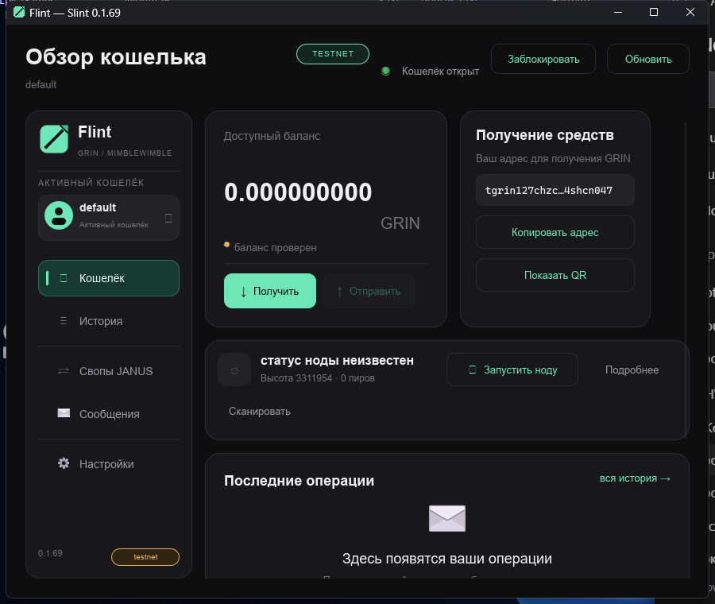

Доступно для тестов
Windows
RC для внешних проверок на устройствах: testnet, unsigned, DEV BUILD.
x86_64 · Rust MSVC · Slint
Windows · Rust + Slint · GPL-3.0
Flint — нативный desktop-кошелёк Grin (Mimblewimble). Ключи, история и нода остаются на вашем диске: без кастодиального посредника, без WebView и без скрытых серверов между вами и сетью.
testnet DEV BUILD unsigned не аудирован
Только для тестовой сети и одноразовых кошельков. Сборка не проходила внешний аудит и не подписана — не используйте её для реальных средств.

Доступно для тестов
RC для внешних проверок на устройствах: testnet, unsigned, DEV BUILD.
x86_64 · Rust MSVC · Slint
Ожидается
Отдельный репозиторий GrinFlint: preview-сборка проходит CI, установка на физический iPhone ещё не проверена.
SwiftUI · свой AGENTS.md и приёмка
Ожидается
Пока только проектный план. Приложения нет, дат не обещаем.
план · без реализации
Возможности
Seed и пароль остаются у вас. Восстановление из 24 слов в чистый каталог: полный скан, сверка адреса с прежним, честные состояния spendable / awaiting / total / immature / locked.
Встроенный grin-wallet из закреплённого fork или управляемый grin-wallet RPC. Capability определяет, какие действия доступны, интерфейс не угадывает.
send → receive → finalize → post → подтверждение по цепи. Безопасные отмена и повтор: незавершённая операция продолжается после перезапуска, повтор не подписывает второй раз.
Нода, полный скан, балансы, история операций и продолжение незавершённых переводов. Отсутствие связи — это не «нулевой баланс», а явный статус.
Контакты, история, durable inbox/outbox. Доставка через relay или direct onion по Tor. Owner API наружу не публикуется.
Slint: без WebView2, без Node.js для самого кошелька. Мышь и клавиатура, масштаб, ru/en, моноширинные суммы с табличными цифрами.
Offline vendor, Cargo.lock, SBOM, SHA-256 поставки и соответствующие исходники. Сборку можно повторить из архива, а не верить на слово.
Профили и сети разделены, у каждого — свой seed и история. Кошельки, нода и настройки остаются файлами на вашем диске.
Сравнение
Справа — обобщённые категории, а не конкретные продукты: у каждого сервиса свои правила. Сноска честнее, чем подсветка неудобных клеток.
На узком экране таблица прокручивается вбок.
| Что важно | Flint | Кастодиальные веб-сервисы | Закрытые GUI-клиенты |
|---|---|---|---|
| Кто держит ключи | Вы | Сервис | Вы |
| Исходный код | Открыт, GPL-3.0-only | Обычно закрыт | Закрыт |
| Соответствующие исходники, SBOM, SHA-256 | В поставке | Нет | Обычно нет |
| Восстановление из seed с полным сканом | Да, со сверкой адреса | Зависит от сервиса | Зависит от реализации |
| Два backend (embedded / RPC) | Да | — | Редко |
| Slatepack: цикл, повтор, отмена | Да, с продолжением после рестарта | Скрыто внутри сервиса | Зависит |
| Шифрованные сообщения и Tor | Да, v1 без forward secrecy | Обычно нет | Нет |
| Внешний аудит | Нет — и мы это пишем | Заявляется | Заявляется |
| Статус | testnet RC, не для реальных средств | Продукт | Продукт |
Честность разработки
Если нужен кошелёк для реальных сумм прямо сейчас — Flint не подходит. Проект существует, чтобы проверять поведение Grin-кошелька открыто: код, тесты, доказательства и открытые ограничения лежат в репозитории.
Платформы
Slint-клиент, Rust MSVC, portable-пакет с нодой, Tor и runtime DLL. Встроенный или управляемый grin-wallet, локальные профили.
GrinFlint — отдельный репозиторий со своей приёмкой. SwiftUI-оболочка, общий Rust-контракт, свой жизненный цикл и Keychain. Desktop-проверки готовность iOS не подтверждают.
Только план. Общие правила переводов и форматы уже описаны, но приложения и его приёмки нет.
Скачать
Flint-0.1.69-slint-preview.zip · 43 693 406 Б
SHA-256 d693ddc5a0ea852552a1c32ef1bda4752d7b1174ab82858e0779c662cc318c25
Открыть релизБинарник не подписан: Windows может показать SmartScreen. Проверьте SHA-256 после скачивания. Пакет содержит ноду, Tor и runtime DLL.
Flint-0.1.69-source.zip · 13 222 811 Б
Соответствующие исходники: workspace, закреплённый fork, Slint, lang, tools
Исходники в релизе
Сборка: pwsh -File tools/bootstrap.ps1 -RestoreVendor,
затем tools/ci.ps1 и tools/package-slint.ps1.
Полный vendor в архив не входит — это указано в SOURCE.md.
Только testnet и одноразовые кошельки. Не переносите сюда реальные seed и mainnet-данные.